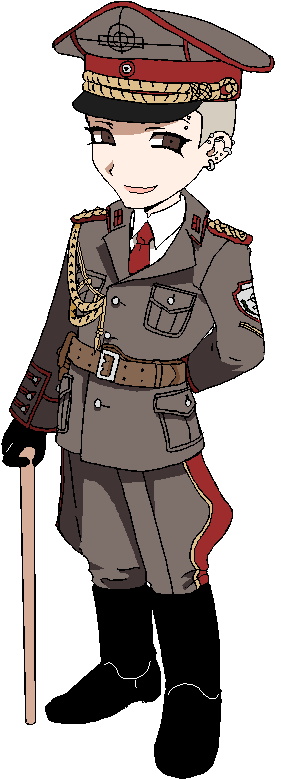
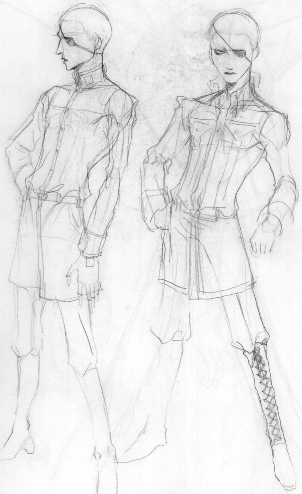
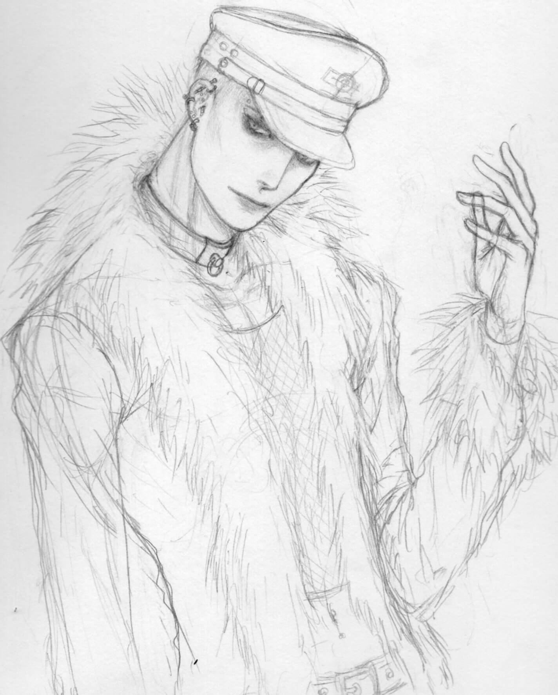

| Go to bottom | back |
|  |
A peculiar and flamboyant man who always has a wry smile on his face. Despite the fact that Segervittring operates on a contract-to-contract basis—pulling tailored personnel from a database based on the contractors needs, rather than maintaining a "standing army"—he still projects all his aesthetic tastes on his employees. As a result, all personnel on-hand wear a customized uniform even in its impracticality, to some of their annoyance. Formed out of the remnants and connections of previous, dissolved PMC groups Håkan operated in, Segervittring has built a reputation under him for its ability to quickly deploy efficient forces to combat in the frontlines, requiring little manpower and yielding highly effective results. In addition to this, the company provides services to secure volatile areas and strategic resources, conduct military training, and direct operations, although they are primarily concerned with implementation as a military provider firm (as opposed to consultant and support firms that typically do not engage in frontline combat). Most of their combat operations are done under the guise of "military advising" and "testing to see if the training worked," in order to circumvent Article 47 of the 1977 Additional Protocol I of the Geneva Conventions... Regarding his actual performance, his business acumen is undisputed, and he excels at maneuvering the PMC's activities in a way that allows itself to emerge undetected/unpunished by law enforcement. Even with his eccentricities and unscrupulous practices, he is very thorough that Segervittring's military professionalism remains untarnished. The cost of this efficiency is that he is generally apathetic and has trouble showing concern for others. Because his emotional intelligence with personal relationships are poor, he can be frustrating to communicate with. He likes to torment and annoy Jan when he is bored in his office. His secret talent is playing the Nyckelharpa, and he enjoys folk music and folk costumes. Some extra trivia: The music he is inspired by is Noise Unit's albums "Strategy of Violence," "Deviator," and Frontline Assembly's "Caustic Grip." |
Full-size can be viewed by right-clicking and opening the image☆. Dates and notes can be viewed upon hovering.
 Stuff I don't really know where to put. Hover for some meager attempt at an explanation.
| Go to top | back |